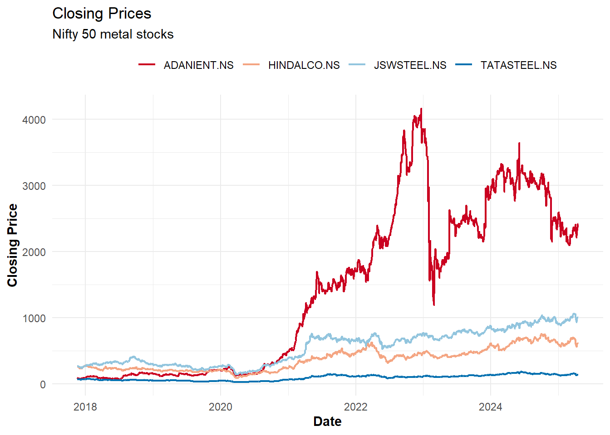

# Load required packages
library(pso) # For PSO implementation (provides psoptim function)
library(ggplot2) # For data visualization
library(dplyr) # For data manipulation and transformation
library(quantmod) # For downloading financial data
library(tidyr) # For reshaping data (pivot_wider, gather functions)
library(plotly) # For creating interactive 3D visualizationsPortfolio Optimization Using PSO
R
Finance
Optimization
Portfolio optimization represents a critical task in investment management, where the goal involves allocating capital across different assets to maximize returns while controlling risk. This post explores how to use Particle Swarm Optimization (PSO) to perform mean-variance portfolio optimization with various constraints.
For additional information on mean-variance optimization and the CAPM model, refer to this paper.
For additional information on particle swarm optimisation, refer to this post on
Libraries
Data Collection
The first step in portfolio optimization involves gathering the necessary data. Historical price data is required to calculate returns and risk metrics.
Getting Stock Tickers
This demonstration utilizes stocks from the NIFTY50 index, which includes the 50 largest Indian companies by market capitalization:
# Read ticker list from NSE (National Stock Exchange of India) website
ticker_list <- read.csv("https://raw.githubusercontent.com/royr2/datasets/refs/heads/main/ind_nifty50list.csv")
# View the first few rows to understand the data structure
head(ticker_list[,1:3], 5) Company.Name Industry Symbol
1 Adani Enterprises Ltd. Metals & Mining ADANIENT
2 Adani Ports and Special Economic Zone Ltd. Services ADANIPORTS
3 Apollo Hospitals Enterprise Ltd. Healthcare APOLLOHOSP
4 Asian Paints Ltd. Consumer Durables ASIANPAINT
5 Axis Bank Ltd. Financial Services AXISBANKDownloading Historical Price Data
The next step involves downloading historical price data for these stocks using the quantmod package, which provides an interface to Yahoo Finance:
# Append ".NS" to tickers for Yahoo Finance format (NS = National Stock Exchange)
tickers <- paste0(ticker_list$Symbol, ".NS")
tickers <- tickers[!tickers %in% c("ETERNAL.NS", "JIOFIN.NS")]
# Initialize empty dataframe to store all ticker data
ticker_df <- data.frame()
# Create a progress bar to monitor the download process
# pb <- txtProgressBar(min = 1, max = length(tickers), style = 3)
# Loop through each ticker and download its historical data
for(nms in tickers){
# Download data from Yahoo Finance
df <- getSymbols(Symbols = nms, verbose = FALSE, auto.assign = FALSE)
# Rename columns for clarity
colnames(df) <- c("open", "high", "low", "close", "volume", "adjusted")
df$date = rownames(df)
# Convert to dataframe and add ticker and date information
df <- data.frame(df)
df$ticker <- nms
df$date <- rownames(df)
# Append to the main dataframe
ticker_df <- rbind(ticker_df, df)
Sys.sleep(0.2)
# Update progress bar
# setTxtProgressBar(pb, which(tickers == nms))
}
# Reshape data to wide format with dates as rows and tickers as columns
# This format facilitates the calculation of returns across all stocks
prices_df <- pivot_wider(data = ticker_df, id_cols = "date", names_from = "ticker", values_from = "close")
# Remove rows with missing values to ensure complete data
prices_df <- na.omit(prices_df)
# Check the date range of our data
range(prices_df$date)[1] "2017-11-17" "2025-06-20"# Check dimensions (number of trading days × number of stocks + date column)
dim(prices_df)[1] 1874 49Visualizing the Data
Before proceeding with analysis, examining the data through visualization helps identify anomalies and understand general trends. The following visualization displays the price data for a subset of stocks (focusing on the metals industry):
# Plot closing prices for metal stocks
prices_df %>%
# Convert from wide to long format for easier plotting with ggplot2
pivot_longer(-date, names_to = "ticker", values_to = "price") %>%
# Attach industry information from our original ticker list
left_join(ticker_list %>%
mutate(ticker = paste0(Symbol, ".NS")) %>%
select(ticker, industry = Industry),
by = "ticker") %>%
# Convert date strings to Date objects
mutate(date = as.Date(date)) %>%
# Filter to show only metal industry stocks for clarity
filter(stringr::str_detect(tolower(industry), "metal")) %>%
# Create the line plot
ggplot(aes(x = date, y = price, color = ticker)) +
geom_line(linewidth = 0.8) +
theme_minimal() +
scale_color_brewer(palette = "RdBu") + # Use a color-blind friendly palette
labs(title = "Closing Prices",
subtitle = "Nifty 50 metal stocks",
x = "Date",
y = "Closing Price") +
theme(legend.position = "top",
legend.title = element_text(colour = "transparent"),
axis.title.x = element_text(face = "bold"),
axis.title.y = element_text(face = "bold"))

The visualization demonstrates the price movements of metal stocks over time. The data reveals periods of both correlation and divergence between different stocks, highlighting the importance of diversification in portfolio construction.
Calculating Returns
For portfolio optimization, we need to work with returns rather than prices. Returns better represent the investment performance and have more desirable statistical properties (like stationarity):
# Calculate daily returns for all stocks
# Formula: (Price_today / Price_yesterday) - 1
returns_df <- apply(prices_df[,-1], 2, function(vec){
ret <- vec/lag(vec) - 1 # Simple returns calculation
return(ret)
})
# Convert to dataframe for easier manipulation
returns_df <- as.data.frame(returns_df)
# Remove first row which contains NA values (no previous day to calculate return)
returns_df <- returns_df[-1,]
# Pre-compute average returns and covariance matrix for optimization
# These constitute key inputs to the mean-variance optimization
mean_returns <- sapply(returns_df, mean) # Expected returns
cov_mat <- cov(returns_df) # Risk (covariance) matrixThe mean returns represent expectations for each asset’s performance, while the covariance matrix captures both the individual volatilities and the relationships between assets. These serve as the primary inputs to the optimization process.
Portfolio Optimization Framework
Objective Function
The core of portfolio optimization is the objective function, which defines the optimization target. In mean-variance optimization, the approach balances three key components:
- Expected returns (reward): The weighted average of expected returns for each asset
- Portfolio variance (risk): A measure of the portfolio’s volatility, calculated using the covariance matrix
- Risk aversion parameter: Controls the trade-off between risk and return (higher values prioritize risk reduction)
The implementation also incorporates constraints through penalty terms:
obj_func <- function(wts,
risk_av = 10, # Risk aversion parameter
lambda1 = 10, # Penalty weight for full investment constraint
lambda2 = 1e2, # Reserved for additional constraints
ret_vec, cov_mat){
# Calculate expected portfolio return (weighted average of asset returns)
port_returns <- ret_vec %*% wts
# Calculate portfolio risk (quadratic form using covariance matrix)
port_risk <- t(wts) %*% cov_mat %*% wts
# Mean-variance utility function: return - risk_aversion * risk
# This is the core Markowitz portfolio optimization formula
obj <- port_returns - risk_av * port_risk
# Add penalty for violating the full investment constraint (sum of weights = 1)
# The squared term ensures the penalty increases quadratically with violation size
obj <- obj - lambda1 * (sum(wts) - 1)^2
# Return negative value since PSO minimizes by default, but the goal is to maximize
# the objective (higher returns, lower risk)
return(-obj)
}This objective function implements the classic mean-variance utility with a quadratic penalty for the full investment constraint. The risk aversion parameter allows us to move along the efficient frontier to find portfolios with different risk-return profiles.
Two-Asset Example
Before tackling the full portfolio optimization problem, this section begins with a simple two-asset example. This approach helps visualize how PSO works and validates the methodology:
# Use only the first two assets for this example
# Calculate their average returns and covariance matrix
mean_returns_small <- apply(returns_df[,1:2], 2, mean)
cov_mat_small <- cov(returns_df[,1:2])
# Define a custom PSO optimizer function to track the optimization process
pso_optim <- function(obj_func,
c1 = 0.05, # Cognitive parameter (personal best influence)
c2 = 0.05, # Social parameter (global best influence)
w = 0.8, # Inertia weight (controls momentum)
init_fact = 0.1, # Initial velocity factor
n_particles = 20, # Number of particles in the swarm
n_dim = 2, # Dimensionality (number of assets)
n_iter = 50, # Maximum iterations
upper = 1, # Upper bound for weights
lower = 0, # Lower bound for weights (no short selling)
n_avg = 10, # Number of iterations for averaging
...){
# Initialize particle positions randomly within bounds
X <- matrix(runif(n_particles * n_dim), nrow = n_particles)
X <- X * (upper - lower) + lower # Scale to fit within bounds
# Initialize particle velocities (movement speeds)
dX <- matrix(runif(n_particles * n_dim) * init_fact, ncol = n_dim)
dX <- dX * (upper - lower) + lower
# Initialize personal best positions and objective values
pbest <- X # Each particle's best position so far
pbest_obj <- apply(X, 1, obj_func, ...) # Objective value at personal best
# Initialize global best position and objective value
gbest <- pbest[which.min(pbest_obj),] # Best position across all particles
gbest_obj <- min(pbest_obj) # Best objective value found
# Store initial positions for visualization
loc_df <- data.frame(X, iter = 0, obj = pbest_obj)
iter <- 1
# Main PSO loop
while(iter < n_iter){
# Update velocities using PSO formula:
# New velocity = inertia + cognitive component + social component
dX <- w * dX + # Inertia (continue in same direction)
c1*runif(1)*(pbest - X) + # Pull toward personal best
c2*runif(1)*t(gbest - t(X)) # Pull toward global best
# Update positions based on velocities
X <- X + dX
# Evaluate objective function at new positions
obj <- apply(X, 1, obj_func, ...)
# Update personal bests if new positions are better
idx <- which(obj <= pbest_obj)
pbest[idx,] <- X[idx,]
pbest_obj[idx] <- obj[idx]
# Update global best if a better solution is found
idx <- which.min(pbest_obj)
gbest <- pbest[idx,]
gbest_obj <- min(pbest_obj)
# Store current state for visualization
iter <- iter + 1
loc_df <- rbind(loc_df, data.frame(X, iter = iter, obj = pbest_obj))
}
# Return optimization results
lst <- list(X = loc_df, # All particle positions throughout optimization
obj = gbest_obj, # Best objective value found
obj_loc = gbest) # Weights that achieved the best objective
return(lst)
}
# Run the optimization for our two-asset portfolio
out <- pso_optim(obj_func,
ret_vec = mean_returns_small, # Expected returns
cov_mat = cov_mat_small, # Covariance matrix
lambda1 = 10, risk_av = 100, # Constraint and risk parameters
n_particles = 100, # Use 100 particles for better coverage
n_dim = 2, # Two-asset portfolio
n_iter = 200, # Run for 200 iterations
upper = 1, lower = 0, # Bounds for weights
c1 = 0.02, c2 = 0.02, # Lower influence parameters for stability
w = 0.05, init_fact = 0.01) # Low inertia for better convergence
# Verify that the weights sum to approximately 1 (full investment constraint)
sum(out$obj_loc)[1] 0.9963105In this implementation, the tracking of all particle movements throughout the optimization process occurs. This enables visualization of how the swarm converges toward the optimal solution.
Visualizing the Optimization Process
One advantage of starting with a two-asset example is the ability to visualize the entire search space and observe how the PSO algorithm explores it. The following creates a 3D visualization of the objective function landscape and the path each particle took during optimization:
# Create a fine grid of points covering the feasible region (all possible weight combinations)
grid <- expand.grid(x = seq(0, 1, by = 0.01), # First asset weight from 0 to 1
y = seq(0, 1, by = 0.01)) # Second asset weight from 0 to 1
# Evaluate the objective function at each grid point to create the landscape
grid$obj <- apply(grid, 1, obj_func,
ret_vec = mean_returns_small,
cov_mat = cov_mat_small,
lambda1 = 10, risk_av = 100)
# Create an interactive 3D plot showing both the objective function surface
# and the particle trajectories throughout the optimization
p <- plot_ly() %>%
# Add the objective function surface as a mesh
add_mesh(data = grid, x = ~x, y = ~y, z = ~obj,
inherit = FALSE, color = "red") %>%
# Add particles as markers, colored by iteration to show progression
add_markers(data = out$X, x = ~X1, y = ~X2, z = ~obj,
color = ~ iter, inherit = FALSE,
marker = list(size = 2))This visualization demonstrates: 1. The objective function landscape as a 3D surface 2. The particles (small dots) exploring the search space 3. How the swarm converges toward the optimal solution over iterations (color gradient)
The concentration of particles in certain regions indicates where the algorithm found promising solutions. The global best solution represents where the particles ultimately converge.
Multi-Asset Portfolio Optimization
With the basic principles understood, the analysis now scales up to optimize a portfolio containing all the assets in the dataset. Instead of using the custom PSO implementation, this section leverages the more efficient psoptim function from the pso package:
# Get the number of stocks in the dataset
n_stocks <- ncol(returns_df)
# Run the PSO optimization for the full portfolio
opt <- psoptim(
# Initial particle positions (starting with equal weights)
par = rep(0, n_stocks),
# Objective function to minimize
fn = obj_func,
# Pass the expected returns and covariance matrix
ret_vec = mean_returns,
cov_mat = cov_mat,
# Set constraint parameters
lambda1 = 10, # Weight for full investment constraint
risk_av = 1000, # Higher risk aversion for a more conservative portfolio
# Set bounds for weights (no short selling allowed)
lower = rep(0, n_stocks),
upper = rep(1, n_stocks),
# Configure the PSO algorithm
control = list(
maxit = 200, # Maximum iterations
s = 100, # Swarm size (number of particles)
maxit.stagnate = 500 # Stop if no improvement after this many iterations
)
)
# Calculate and display the expected return of the optimized portfolio
paste("Portfolio returns:", round(opt$par %*% mean_returns, 5))[1] "Portfolio returns: 0.00065"# Calculate and display the standard deviation (risk) of the optimized portfolio
paste("Portfolio Std dev:", round(sqrt(opt$par %*% cov_mat %*% opt$par), 5))[1] "Portfolio Std dev: 0.00914"# Verify that the weights sum to approximately 1 (full investment constraint)
sum(opt$par)[1] 0.9923503The optimization has identified a portfolio allocation that balances return and risk according to the specified risk aversion parameter. The high risk aversion value (1000) indicates prioritization of risk reduction over return maximization.
Adding Tracking Error Constraint
One advantage of PSO is its flexibility in handling various constraints. The following demonstrates this by adding a tracking error constraint, which is common in institutional portfolio management. Tracking error measures how closely a portfolio follows a benchmark:
# Define benchmark portfolio (equally weighted across all stocks)
bench_wts <- rep(1/n_stocks, n_stocks)
# Calculate the time series of benchmark returns
bench_returns <- as.matrix(returns_df) %*% t(t(bench_wts))
# Create a new objective function that includes tracking error
obj_func_TE <- function(wts,
risk_av = 10, # Risk aversion parameter
lambda1 = 10, # Full investment constraint weight
lambda2 = 50, # Tracking error constraint weight
ret_vec, cov_mat){
# Calculate portfolio metrics
port_returns <- ret_vec %*% wts # Expected portfolio return
port_risk <- t(wts) %*% cov_mat %*% wts # Portfolio variance
port_returns_ts <- as.matrix(returns_df) %*% t(t(wts)) # Time series of portfolio returns
# Original mean-variance objective
obj <- port_returns - risk_av * port_risk
# Full investment constraint (weights sum to 1)
obj <- obj - lambda1 * (sum(wts) - 1)^2
# Tracking error constraint (penalize deviation from benchmark)
# Tracking error is measured as the standard deviation of the difference
# between portfolio returns and benchmark returns
obj <- obj - lambda2 * sd(port_returns_ts - bench_returns)
return(-obj) # Return negative for minimization
}
# Run optimization with the tracking error constraint
opt <- psoptim(
# Initial particle positions
par = rep(0, n_stocks),
# Use our new objective function with tracking error
fn = obj_func_TE,
# Pass the expected returns and covariance matrix
ret_vec = mean_returns,
cov_mat = cov_mat,
# Set constraint parameters
lambda1 = 10, # Weight for full investment constraint
risk_av = 1000, # Risk aversion parameter
# Set bounds for weights
lower = rep(0, n_stocks),
upper = rep(1, n_stocks),
# Configure the PSO algorithm
control = list(
maxit = 200, # Maximum iterations
s = 100, # Swarm size
maxit.stagnate = 500 # Stop if no improvement after this many iterations
)
)
# Calculate and display the expected return of the optimized portfolio
paste("Portfolio returns:", round(opt$par %*% mean_returns, 5))[1] "Portfolio returns: 0.00074"# Calculate and display the standard deviation (risk) of the optimized portfolio
paste("Portfolio Std dev:", round(sqrt(opt$par %*% cov_mat %*% opt$par), 5))[1] "Portfolio Std dev: 0.01109"# Verify that the weights sum to approximately 1
sum(opt$par)[1] 0.9974361By adding the tracking error constraint, the result is a portfolio that not only balances risk and return but also tracks the performance of an equally-weighted benchmark to a specified degree. The lambda2 parameter controls the closeness of benchmark tracking - higher values result in portfolios that more closely resemble the benchmark.
Advantages and Limitations of PSO
Advantages:
Flexibility: PSO can handle non-convex, non-differentiable objective functions, making it suitable for complex portfolio constraints that traditional optimizers struggle with
Simplicity: The algorithm is intuitive and relatively easy to implement compared to other global optimization techniques
Constraints: Various constraints can be easily incorporated through penalty functions without reformulating the entire problem
Global Search: PSO explores the search space more thoroughly and is less likely to get stuck in local optima compared to gradient-based methods
Parallelization: The algorithm is naturally parallelizable, as particles can be evaluated independently
Limitations:
Variability: Results can vary between runs due to the stochastic nature of the algorithm, potentially leading to inconsistent portfolio recommendations
Parameter Tuning: Performance significantly depends on parameters like inertia weight and acceleration coefficients, which may require careful tuning
Convergence: There’s no mathematical guarantee of convergence to the global optimum, unlike some convex optimization methods
Computational Cost: Can be computationally intensive for high-dimensional problems with many assets
Constraint Handling: While flexible, the penalty function approach may not always satisfy constraints exactly
Practical Applications
PSO-based portfolio optimization proves particularly valuable in scenarios where:
- Traditional quadratic programming approaches fail due to complex constraints
- The objective function includes non-linear terms like higher moments (skewness, kurtosis)
- Multiple competing objectives need to be balanced
- The portfolio needs to satisfy regulatory or client-specific constraints
Conclusion
Particle Swarm Optimization provides a powerful and flexible approach to portfolio optimization that can overcome many limitations of traditional methods. The algorithm can handle complex objective functions and constraints that might be difficult to solve with classical optimization techniques.
The approach demonstrated in this tutorial can be extended to include additional constraints such as:
- Sector or industry exposure limits
- Maximum position sizes
- Turnover or transaction cost constraints
- Risk factor exposures and limits
- Cardinality constraints (limiting the number of assets)
For more robust results in practice, practitioners should consider these enhancements:
- Run the algorithm multiple times with different random seeds and average the results
- Implement a hybrid approach that uses PSO for global exploration followed by a local optimizer for refinement
- Add constraints gradually to better understand their impact on the portfolio
PSO represents just one of many metaheuristic approaches that can be applied to portfolio optimization. Other techniques like genetic algorithms, simulated annealing, or differential evolution might also be worth exploring depending on specific requirements.